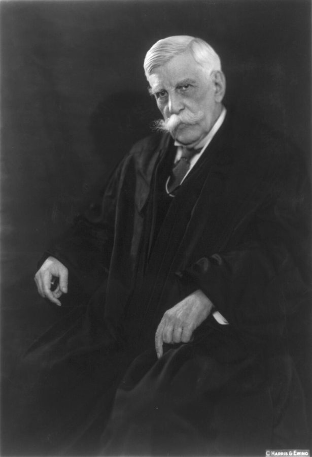
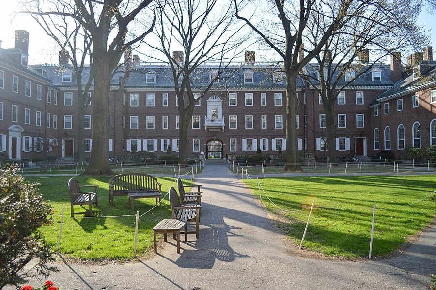
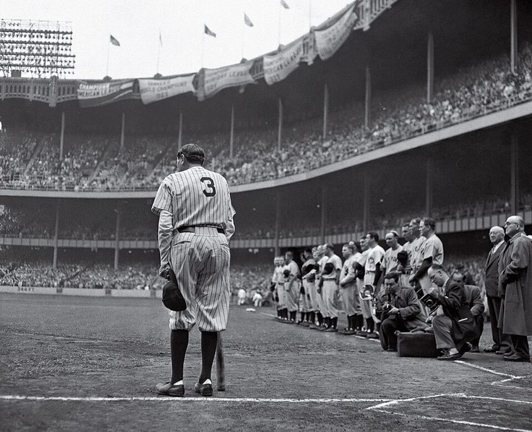

这一页在做什么
七十二到七十五岁，在家写作，挂名胡佛研究所。接着上一页：外甥女的体检好消息刚到，这一页她就走了。十八封信全是他写的，三类：给老友和家人的，谈领奖、身体、往事；给读者的短答复；给编辑和同行的。读的时候留意他回头看的那几封。全书停在 2006 年 1 月他在车库里翻旧信的那一封上。
2003 2004 2005 2006
奖章
Bradley
新书
翻旧信
Clarence Walter Sis Norton Mrs. G 读者 编辑、同行 圣诞贺卡
本站示意图。一个圆点是一封信，按信上的日期画。信挤在 2003 年和 2004 年初；2004 年 7 月以后只有两封，一封在 2005 年，一封在 2006 年。奖章那一格的位置只是大致的，书里没说哪天。
这一页的串场文字比前面短，多是一句话引出一封信。例外有两处：讲 Bradley 奖的那四段，和 2005 年新书出版后的三段。后者是全书最后一段长的串场，说的是他眼里公共讨论的空间变窄了。
收信人和提到的人
这一页有十几位收信人，都是他写过去的，没有别人写来的信。老朋友读者都认识，这里只写他们的新情况；读者来信的人多数被换成了星号。
Clarence Clarence Thomas · 最高法院大法官 两封。一封贺 Thomas 签了出书合同，一封圣诞信谈 Holmes。中间还有一件事：Thomas 替他去白宫领了奖章。口气是老朋友之间的，玩笑很多。
Walter Walter Williams · 经济学家，三十多年的朋友 两封。一封只有一段，讲小时候干的险事；另一封是全书最后一封，回头看两人当年有多悲观。
Sis Mary Frances · 亲姐姐，住在华盛顿 两封。一封讲外甥女去世和白宫的奖章，一封是回头看一生的短信。第二封前面的串场是一张图片，见错字表下面。
Norton 哈佛时的室友 · 60 年代信里的 Nort 两封。一封讲包机去华盛顿领奖和白宫国宴，一封回想到哈佛头一个月收到的一份聘书。称呼从 Nort 变成了全名。
Mrs. G Marie Gadsden · 霍华德的英文老师 全书写给她的最后一封。她住进了养老院，他补寄生日的问候，讲两件家里的趣事逗她。
Mary 他的妻子 · 这一页不是收信人 信里的 Mary 都是妻子：陪他去华盛顿，在国宴上和一位议员争起来，看了 Mrs. G 年轻时的照片有话说。
Ruth Ellen 哈莱姆的外甥女 · 上一页写作 Ruthellen 他长大的那个家里的晚辈。上一页末尾查出没有癌症，这一页突然去世。他为她写了一篇专栏，发出去之前先问了姐姐。
David 两个人：David Horowitz 和 David Armor 2004 年 1 月那封写给 Horowitz，作家，谈共和党怎么争取黑人选票；2 月那封写给社会科学家 Armor，谈统计数字量不出来的家庭因素。
Ms. Charen Mona Charen · 辛迪加专栏作家 他在专栏里推荐了她的书，她来信道谢。他回信说不必谢，接着讲起三四十年代的纽约。后来两家一起吃了晚饭。
Mr. ***** 至少三位读者 · 名字被隐去 三封称呼是星号的短信谈枪支管制、Pete Rose；5 月那份便笺的收信人也是星号，是个加拿大人。另有一位留了姓的 Mr. Brown，为儿子来求几句话。
Sir The Economist 的编辑 英国报刊的读者来信照例以 Sir 开头，不写名字。这封信批评的是那份杂志怎么用收入统计。
Na 只被提到 · 他的研究助理 给 Mrs. G 的信里，妻子在电话上跟 Na 说的那句玩笑。上一页有一份写给 Na 的传真。
Mary 和 Sis。 姐姐叫 Mary Frances，但这一页写给她的信称 Sis，信里说到的 Mary 是妻子。3 月那封的 what you and Mary thought ，是说姐姐和妻子两个人的意见。
只被提到的公众人物。 President Bush 是小布什；Colin Powell 当时是国务卿；Milton Friedman 是他在芝加哥的老师。Holmes、Laski、Bauer、Bartley、Lott、Kemp、Mfume、Robeson、Pete Rose 见背景和词条。星号后面是谁，本站不猜。
信件地图
一条是一封信。斜体字是那封信正文开头的几个词，照这一版屏幕上的字抄的，在 Kindle 里搜它就能跳过去。编号是黄底的，是别人写来的信；这一页没有。「留意」只给方向，答案在信里。
First of all, congratulations on the 2003 年 1 月 10 日 · 写给 Clarence Thomas 留意：括号里那句喊冤是谁在吃亏；最后一段的好消息，记到下一封家信。My arguments about gun control are 2003 年 1 月 13 日 · 写给一位读者 留意：他把自己的立场建在哪里，没建在哪里。Thanks for your advice on the 2003 年 3 月 11 日 · 写给姐姐 Mary Frances 留意：为什么没请家里人去领奖；Thomas 答应时说了什么。I am truly frightened by the 2003 年 3 月 25 日 · 写给一位读者 留意：读者用的词是 personal，他换成了哪个词；棒球怎么一路说到罗马。To this day I get cold 2003 年 4 月 2 日 · 写给 Walter Williams 留意：破折号后面补的那半句；妻子后来拿这件事当什么用。I have not forgotten your birthday. 2003 年 5 月 2 日 · 写给 Mrs. G 留意：他怎么劝一位住进养老院的老师别觉得自己老；两处妻子的反应。What a shame that other Canadians 2003 年 5 月 30 日 · 便笺，收信人被隐去 留意：开头两句是夸还是损；他拿什么当证据。Why do people who write about 2003 年 9 月 15 日 · 写给 The Economist 的编辑 留意：他要把哪个统计单位换成哪个；给了几条理由。Last month I ventured outside California 2003 年 11 月 10 日 · 写给 Norton 留意：他对国宴的评价落在哪件小事上；Powell 那句话是不是责备。To Family and Friends: This has 2003 年圣诞 · 附在贺卡里，给亲友 留意：两个带 much- 的词是谁的口气；最后一句的双关。Recently I have been re-reading the 2003 年圣诞 · 写给 Clarence Thomas 留意：他对 Laski 先让了几步才下结论；下棋那一段在担心什么。Today, I am told, the government 2004 年 1 月 21 日 · 写给 David Horowitz 留意：他不是反对争取黑人选票，他反对的是什么方向。You asked me for 2004 年 2 月 16 日 · 写给一位父亲 Mr. Brown 留意：对方要的是什么，他给了没有；最后一句是玩笑话还是真火气。Your concern about family characteristics as 2004 年 2 月 23 日 · 写给 David Armor 留意：三次说「买不来」「量不出」的各是什么；最后一句怎么收回来。Looking back on my life, I 2004 年 3 月 24 日 · 写给姐姐 Mary Frances 留意：他举的那个没实现的志向；由此批评的是学校的哪种做法。From time to time I think 2004 年 7 月 8 日 · 写给 Norton 留意：他设想的另一种人生是什么；opportunities 为什么带引号。I was doing a favor to 2005 年 4 月 17 日 · 写给 Mona Charen 留意：同一座公园在两个年代里的样子；他为什么自己喊停。Currently I am going through four 2006 年 1 月 7 日 · 写给 Walter Williams 留意：旧信让他看到当年的什么心情；现在哪一点不同了。
背景：作者默认你知道的事
一年里的两个奖
1980 年代，Clarence Thomas（右）在白宫见里根，当时 Thomas 主持平等就业机会委员会。二十年后他是大法官，替朋友回到白宫领奖。White House Photographic Office，公有领域，维基共享资源 国家人文奖章（National Humanities Medal）由总统在白宫颁发，一年最多十二位。他不愿坐飞机，请 Thomas 代领。Bradley 奖是密尔沃基的 Bradley 基金会 2003 年新设的，头一届四人，每人二十五万美元，10 月在华盛顿颁奖。这家基金会长期资助保守派的学者和机构。
Pete Rose 和 1919 年的假球
Pete Rose 是大联盟安打数最多的球员，1989 年因赌球被终身禁赛，也就进不了名人堂。前例是 1919 年世界大赛：芝加哥白袜队八名球员被控收钱输球，其中有 Shoeless Joe Jackson，全被永久逐出棒球界。2003 年，该不该给 Rose 解禁正吵得热闹。读者替 Rose 说情，他的回信不谈 Rose 的为人，谈规则。
Holmes 和两套书信集

Oliver Wendell Holmes Jr.，约 1930 年，将近九十岁。Harris & Ewing，公有领域，维基共享资源 Oliver Wendell Holmes Jr. 在最高法院做了近三十年大法官，1932 年初退休，年过九十。他和英国法学家 Frederick Pollock、和伦敦政治经济学院（LSE）的政治学教授 Harold Laski 各通信多年，都出了书信集。Laski 是工党的理论家，学生里有不少后来的亚非政治人物。Peter Bauer 是同一所学校的发展经济学家，以批评对外援助和计划经济知名。
Lott、Kwanzaa 和 Robeson 的邮票
2002 年底，参议院共和党领袖 Trent Lott 因一番称赞当年隔离派候选人的话惹出风波，上黑人电视台 BET 道歉，后来辞去领袖职务。Kwanzaa 是 1966 年创立的非裔美国人年末节庆，创立者是黑人民族主义者。Paul Robeson 是歌唱家、演员，长期亲苏；2004 年 1 月邮政局发行了他的纪念邮票。信里把这三件事算成同一种做法。
按「户」算和按「人」算
甲户：四口人
两人全年全职 两个孩子
乙户：一个人
已退休，不上班
按户比：甲是乙的好几倍。按人比：差得没那么多。
统计表上两边都只记作「一户」；而且今天在乙那一档的人，过些年多半已经换了档
本站示意图，例子是本站编的，不是信里的数字。给 The Economist 的信有两条理由：户和户的人数、上班的人数差得很远；人会在收入档之间流动。信里的数字他说都在自己的 Basic Economics 里。
收入分配的统计常把住户（household）按收入排队，切成五份，比最高的五分之一和最低的五分之一。他的意见是：这样比出来的是统计上的格子，不是人。持另一种看法的人会说，住户是花钱过日子的单位，差距同样是真的。信里没有展开这一层。
Odyssey 里讲过这一段
回忆录 2000 年出版，这一页的事都在它之后，没有哪一章讲过。但这些信不断回头，提到的旧事多半你在回忆录里读过；全书的收尾也可以和回忆录的最后一章对着看。

哈佛的 Kirkland House。他和 Norton 住的 Apley Court 归这个学舍管，三个转学生在这里吃饭。2004 年给 Norton 的信回到的就是那个秋天。Ywu01，CC BY-SA 3.0，维基共享资源
哈佛的头一个月 Odyssey 第 5 章（下） 回忆录讲了 Apley Court、Norton 那句不客气的话和期中的四个坏分数；到哈佛之前他在华盛顿四处应聘摄影的差事，回忆录也讲了。信里多出一件事：入学头一个月，华盛顿来了一份政府摄影师的聘书。六十年代末以后他常想，当初要是接了会怎样。
去那一页 → 没人读到七年级的家 Odyssey 第 2 章（上） 升初中时家里人那句话、事先替他物色好的那个男孩，回忆录都有，那个男孩叫 Eddie Mapp。给 Armor 的信没提名字，多了一句家里人回答他几岁会走路的话，还提到一本没写成的书。
去那一页 → 两本书各自怎么收尾 Odyssey 第 12 章 回忆录最后一章数自己的运气，说写下的东西哪些能留下他不会知道，末了引 Holmes 的一句话：但愿给后来的人递过一点火星。这本书的最后一封信有了下文：他说现在知道后面有人接着做。这一页他正在重读 Holmes 的书信。那一章里说「同一栋楼，不是同一所学校」的外甥女，就是这一页去世的 Ruth Ellen。
去那一页 → 奖章、包机、两楼之间那一跳 回忆录没写 两个奖、身体好转、新书的遭遇都在回忆录出版之后。旧事里也有回忆录没讲的：在哈莱姆常从两栋楼之间的空隙上跳过去，牵着小狗穿过整座公园。给 Mona Charen 的信里引的 Disraeli 那个词，回忆录的序言第一段就用过。
1968 1972 1976 1980
拿到博士 在大学教书
华盛顿两年
驻访一年半
Senior Fellow 彻底离开校园
线上没有色块的年份，他都在大学里教书
本站示意图。「两年」「一年半」「1980 年」是信里的说法；色块画在哪几年，是照回忆录第 9、10 章放的。信里把这十二年叫作从校园「逃出去」的过程。
这一版的错字
只收会让人读不懂、或者在 Kindle 里搜不到的。第一格是屏幕上的字，照抄的；第二格是本站有把握的原字。问号前多出来的撇号全书都有，见「开读之前」，这里不列。
屏幕上的字 应为 在哪 get I'M writing hooks get for writing books 这一页第一段串场。book 认成 hook，全页有好几处 one personbut households one person—but households 给 The Economist 的信最后一段。破折号丢了，两个词粘在一起 do not tit prevailing do not fit prevailing 那封信后面的串场 would have to he present would have to be present 讲 Bradley 奖的串场 thought hack on thought back on 同一组串场的第三段。back 认成 hack，后面还有一处 I lowever, this was However, this was 同一段的最后一句。大写 H 被拆成了两个字母 taken witness Senator Lott's taken—witness Senator Lott's 给 David Horowitz 的信。少了破折号，witness 是「请看」，不是 taken 的宾语 her hook /)o-Goodets her book Do-Gooders 给 Mona Charen 的信前面的串场。书名搜不到 people arc no longer people are no longer 给 Mona Charen 的信，讲华盛顿的那句 my latest hook, Black Rednecks and While Liberals my latest book, Black Rednecks and White Liberals 2005 年新书的串场。下一段里书名是对的 acting as it A had never acting as if I had never 同一组串场的第三段
两条脚注，两张图片。 给 The Economist 的信第一句里 inequality' 多出的撇号是脚注号，脚注给的是他批评的那篇文章：该刊 2003 年 9 月 6 日那一期第 28 页。新书那段串场里 of any kind. 后面的怪符号也是脚注号，脚注说 Mona Charen 在专栏里评过这本书，专栏登在很多报纸上，他只算一篇。5 月 30 日那份便笺，日期下面的收信人一行是图片，名字本来就隐去了。2004 年 3 月给姐姐的信前面有一段串场整段是图片，搜不到，大意是：规划人生听着不错，却很少如愿，下面这封信说的就是这个。
词与短语
按信的顺序排，串场文字里的词条归到它后面那封信的组里。斜体小字是那句话里的几个词，照这一版屏幕上的字抄的（撇号是直的），在 Kindle 里搜它就能跳到那一句。单个的生词长按就能查，这里收的主要是词典帮不上忙的。
2003 年 1 月 · 给 Clarence Thomas
advance
… kind of large advance that public figures …
预付版税
出版社签约时先付给作者的钱，日后从版税里扣。和「前进」无关。
could not have happened to a better person
… could not have happened to a better …
这好事落在你头上再合适不过
道贺的套话。字面是「不可能落到更好的人头上」。
hand-wringing
… some of the hand-wringing concerns of …
搓着手发愁的
绞手是忧心忡忡的样子。带挖苦：愁得很做作。
deep thinkers
… concerns of media deep thinkers. But, …
「深刻的思想家」们
反话。说的是对这笔预付款大惊小怪的评论员。
Talk about injustices
… of my column. (Talk about injustices!) …
这才叫不公平呢
Talk about X! = 要说 X，这就是。玩笑：你可以不看这些评论，我为了写专栏还得看。
make it back
… the publisher will make it back although …
把这笔钱挣回来
it 是预付款。书卖得够多，出版社才不亏。
royalties
… that I never include royalties in my …
版税
他从不把版税算进家里的预算，因为书的销量没法预测。
2003 年 1 月 · 给读者，谈枪支管制
get bogged down
… often get bogged down over conflicting …
陷在里面出不来
bog 是泥沼。说争论卡在怎么解释宪法第二修正案上。
tangential
… controversy seems to me tangential. …
不相干，擦边的
几何里的切线：只碰到一点。
repeal
… would then advocate repeal of the Second …
废除（法律条文）
这句是虚拟语气：假如事实相反，我就主张废掉这条修正案。他的意思是立场跟着事实走。
2003 年 3 月 · 给姐姐
infirmities of age
… The infirmities of age had made flying …
年老体衰
书面的委婉说法。
bittersweet
… This was a bittersweet time for me …
悲喜交加的
奖章和丧事撞在一起。
a clean bill of health
… given a clean bill of health not …
体检一切正常的结论
原是船只离港时的无疫证明。和账单无关。
send it out
… would not have sent it out without …
把稿子发出去
专栏通过辛迪加发给各地报纸，一发出去就收不回。所以写家里人的那一篇，他先问了姐姐和妻子。
On a happier note
… On a happier note, I enclose a …
说点高兴的
note 是调子。写信换话题的套话；I enclose 是「随信附上」。
bringing the media into your lives
… worth bringing the media into your lives. …
把记者引到你们的日子里来
他一直不让媒体接触家人。Odyssey 第 11 章讲过他 1981 年被媒体追着写的经历。
impose on
… very reluctant to impose on him but …
麻烦（别人）
不是「强加」。客气话：不好意思占人家的时间。
a gem
… He is truly a gem and I …
难得的好人
gem 是宝石，说人是极高的夸奖。
2003 年 3 月 · 给读者，谈 Pete Rose
Hall of Fame
… go into the Baseball Hall of Fame, …
名人堂
在纽约州 Cooperstown。入选是球员一生最高的荣誉。
lifetime batting average
… with a lifetime batting average of …
生涯打击率
安打数除以打数，写成三位小数。后面的 12 points 是千分之十二。那个短横是破折号。
throw
… the deliberate throwing of the 1919 World …
故意输掉（比赛）
熟词生义。throw a game = 打假球放水。
framework
… jeopardizes the whole framework in which he …
大家赖以运转的那套架子
这封信的关键词，出现了四次。读者说的是个人的过错，他说的是规则体系。
prescribed in advance
… penalty that was prescribed in advance. …
事先明文规定的
prescribe 这里是「规定」，不是开药方。
myopia
… and the same myopia-was involved in …
近视，只看眼前
医学词借来说眼光短。圣诞信里说税务会计师时又用了形容词 myopic。
cheap encounters
… for his cheap encounters with an intern. …
不体面的勾当
cheap 是下作，不是便宜。说的是 1998 年克林顿和白宫实习生的事；他说要紧的不是这个，是作伪证。
with impunity
… and obstruction of justice with impunity. …
不受任何惩罚地
前面的 perjury 是伪证，obstruction of justice 是妨碍司法，都是弹劾案里的罪名。
intangibles
… internal erosions of intangibles can destroy …
看不见摸不着的东西
信任、规矩这一类。前面 decline and fall of the Roman Empire 是 Gibbon 那部史书的书名。
2003 年 4 月 · 给 Walter Williams
get cold chills
… this day I get cold chills thinking …
后背发凉
后怕。To this day = 直到今天。
if the truth be known
… if the truth be known, after I …
说实话
be 是古旧的虚拟式，固定说法。补的这半句是自首：长大以后也没少干。
2003 年 5 月 · 给 Mrs. G
feeling poorly
… just been “feeling poorly,” as they say, …
身上不大舒服
老派、带南方味的说法，所以加引号，还补一句 as they say 。和穷无关。
mildly miserable
… Nothing serious, just mildly miserable. But …
有点难受而已
两个 m 押头韵，说着玩的。
with mock horror
… research assistant, saying with mock horror: …
装出吓坏了的样子
mock 作形容词是假装的。妻子的意思：他病一好，又是原来那个不好对付的人了。
still going strong
… who is still going strong in his …
依然硬朗
Friedman 生于 1912 年 7 月，写这封信时已满九十岁，信里说的是 in his 90th year。
sidelong looks
… one of those sidelong looks that wives …
斜着眼的那一瞥
妻子夸完照片上的人漂亮，又瞟了丈夫一眼。照片是五十年代他给 Mrs. G 拍的。
2003 年 5 月 · 便笺，谈加拿大的医疗
What a shame
… What a shame that other Canadians do …
真可惜
反话。对方大概说加拿大人珍爱自己的医疗制度，他把 cherish 加上引号还回去，再附一条民调新闻。
2003 年 9 月 · 给 The Economist
flesh-and-blood
… we interested in flesh-and-blood human beings or …
有血有肉的
和它对着的是 statistical categories ，统计上的类别。
heads of households
… 19 million heads of households who worked, …
户主
人口普查的术语，一户填一个。不是「家庭的头」。
the year around
… working full-time the year around, even …
一年到头
现在多写 year-round 。和 full-time 连用是劳工统计的固定口径：全职且全年。
income brackets
… As for income brackets, most Americans …
收入档
bracket 是括号，引申为一档一级。tax bracket 是税率档。
absolute majority
… An absolute majority of those Americans …
过半数
后面方括号里的 40 是编书时补的字。
2003 年 11 月 · 给 Norton
an offer I couldn't refuse
… It was an offer I couldn't refuse. …
没法拒绝的条件
化用电影《教父》的台词，原话是黑帮的威胁。这里的「威胁」是二十五万美元加半价包机。下一段他又用了一次。
state dinner
… to a state dinner at the White …
国宴
总统款待来访的外国元首。
no decent way to decline
… was no decent way to decline, since …
没有说得过去的理由推掉
decent 这里是「体面、过得去」。给 Norton 的信里同一个词又用来夸布什夫妇为人厚道。
cope with
… that I was willing to cope with. …
勉强承受
往轻里说的玩笑。cope with 一般用在苦事上，这里要「承受」的是白得一大笔钱。
go to waste
… money wouldn't go completely to waste. …
白白糟蹋
玩笑：有了钱我只会多一样开销，就是包机。
not my idea of
… common was not my idea of the …
在我看来算不上
往轻里说。实际意思：这一晚上很难熬。
playoff game
… made me miss a playoff game. …
季后赛
10 月是棒球季后赛的月份。拿它和白宫国宴比，是故意的。
got into it with
… table and got into it with some …
和……争了起来
口语。it 没有具体所指。
Proposition 13
… are due to Proposition 13, which kept …
加州第 13 号提案
1978 年加州选民公投通过，给房产税封了顶。批评者说它掏空了州和地方的财政；which 后面是他自己的评语，站在另一边。
lit into
… Mary lit into the Congressman, with a …
劈头盖脸说了一通
light into 的过去式：猛烈抨击。和点灯无关。
disgraced us all
… Your wife has disgraced us all! …
把我们的脸都丢光了
正话反说。Powell 是笑着说的，意思是她说得痛快。
2003 年圣诞 · 贺卡里的话
gathered dust
… when my crutches gathered dust in the …
搁着落灰
拐杖用不上了。
a former old man
… myself as “a former old man.” Part …
「前」老头
仿 former president 的说法：老头这个身份已经卸任。
much-lamented
… one of those much-lamented samples of new …
人人痛心的
学批评者的腔调，后面的 much-deplored 也是。他要说的是：治好我的正是药厂送给医生的试用药。上一页有一封信谈药品广告。
exercised discretion
… had not even exercised discretion. …
行事谨慎
双关。前一句的 exercise 是锻炼身体，这一句的 exercise 是「运用」：多年来我连谨慎都没「练」过。
2003 年圣诞 · 给 Clarence Thomas
inveterate liar
… have been an inveterate liar, but …
积习难改的说谎者
这是他的说法。批评 Laski 的人常说他爱夸大、爱抬高自己。
guinea pigs
… own people as guinea pigs for testing …
试验品
豚鼠，实验室里的小白鼠。
a bigger name
… and was a bigger name in his time. …
名气更大
name 指有名望的人。in his time 是在他那个年代。
the good justice
… after the good justice was no longer …
这位可敬的大法官
the good 加头衔是带敬意的老派称呼，指 Holmes。这句先数 Laski 的三条好处，破折号后才是结论。
the High Court
… resignation from the High Court in his …
最高法院
美国人对 Supreme Court 的另一种叫法。句里的 the Chief Justice 是首席大法官。
losing streak
… A losing streak a while back, playing …
一连串的输
体育用语。streak 是连续的一段，winning streak 是连胜。
had me wondering
… intermediate level, had me wondering. But, …
让我犯起嘀咕
嘀咕的是脑子是不是开始不行了。他拿电脑象棋当体检。
four straight
… I won four straight at the expert …
连赢四盘
straight 是「连着」。
passing
… the recent passing of Bob Bartley reminded …
去世
委婉语。Robert Bartley 主持《华尔街日报》社论版三十年，2003 年 12 月去世。
editorial page
… by making the editorial page of the …
社论版
美国报纸的社论版和新闻版是两班人马。《华尔街日报》社论版偏右，《纽约时报》的偏左。
a note of dismay
… was a note of dismay in my …
一丝懊丧的口气
税务会计师听说客户得了大奖，先想到的是要多交多少税。
You poor devil
… he didn't say “You poor devil,” which …
你这倒霉蛋
devil 是可怜虫，带同情，不是骂人。
2004 年 1 月 · 给 David Horowitz
proclaimed Kwanzaa
… the Bush administration proclaimed Kwanzaa. For …
为 Kwanzaa 发了文告
总统在节日发贺词或文告。Kwanzaa 见背景。
make inroads into
… way to make inroads into the black …
打开缺口，抢到一块
inroad 原是侵袭。黑人选票多年来绝大多数投给民主党。
approach from the left
… is to approach from the left. Nor …
从左边靠过去
他的判断：共和党争得到的那部分黑人选民，恰恰不吃这一套。
schmooze
… urging him to schmooze with Kweisi Mfume …
套近乎
来自意第绪语。Jack Kemp 是共和党前议员，Kweisi Mfume 当时是有色人种协进会（NAACP）的会长。
and the like
… Kweisi Mfume and the like. …
之流
用在人身上带轻蔑。
2004 年 2 月 · 给 Mr. Brown
intelligentsia
… some among the intelligentsia celebrated. I …
知识界
来自俄语。他用这个词几乎总带贬义。
pushing
… who are pushing this self-destructive stuff …
兜售
push 是贩毒的人向人推销毒品的那个词，pusher 是毒贩。用在这里是有意的。
polite society
… be repeated in polite society. What …
体面的场合
意思是：我想到的全是脏话。
the Geneva Convention
… permitted by the Geneva Convention. …
日内瓦公约
规定战时怎样对待战俘和平民的国际公约。夸张的气话：我想对那些人做的事，连公约都不许。
2004 年 2 月 · 给 David Armor
hard data
… test theories against hard data, I am …
实打实的数据
hard 是确凿的，不是难。
hits home
… one that hits home with me especially. …
说到了我心坎上
home 是要害。因为下面要讲的就是他自己的家。
a big to-do
… by what a big to-do they made …
好大的阵仗
to-do 作名词：大惊小怪、兴师动众。
You can't buy that
… You can't buy that and you can't …
这个花钱买不来
这一段的叠句，说了两遍。that 先指家里替他找榜样，后指总有人抱着他。
on welfare
… People on welfare today have a higher …
吃救济的
welfare 在美国专指政府给穷人的补助，不是泛泛的「福利」。
lower east side
… like the lower east side of New York …
曼哈顿下东区
二十世纪初东欧犹太移民聚居的贫民区，通常大写。
peculiar to
… None of this is peculiar to blacks. …
……所独有
不是「奇怪」。
guilty of
… I have been guilty of collecting statistics …
我自己也干过
自嘲的收尾。他一辈子都在用统计数字，这封信只是说数字有量不到的地方。
2004 年 3 月 · 给姐姐
centerfield
… unfulfilled-playing centerfield at Yankee Stadium, for …
中外野
他少年时洋基队守这个位置的是 Joe DiMaggio。短横是破折号。
more than made up for
… expected to get more than made up …
补回来还有余
make up for 是弥补，more than 是绰绰有余。主语是前面那一长串：我从没指望得到的那些东西。
think tank
… an economist or a think tank was, yet …
智库
指胡佛研究所。到写信时他在那里已经二十四年。
2004 年 7 月 · 给 Norton
paid off in a ticket
… had paid off in a ticket to a …
换来的是一张入场券
pay off 是有了回报。苦读多年，回报是进学术界的门票，而他对学术界已经没了敬意。所以说 bitter irony。
scholar in residence
… as a scholar in residence at the …
驻访学者
在研究机构待一段时间专心写作，不教课。
Senior Fellow
… I became a Senior Fellow at Hoover. …
高级研究员
胡佛研究所的长期职位，不用教书。
let all those “opportunities” pass
… but I let all those “opportunities” pass. …
这些「机会」我一个也没接
引号表示他不认那是机会。说的是斯坦福想拉他参加校内的事务。
2005 年 4 月 · 给 Mona Charen
Syndicated columnist
… Syndicated columnist Mona Charen sent me …
辛迪加专栏作家
文章由一家代理公司同时卖给许多报纸。他自己也是。
thanks were in order
… not think that thanks were in order. …
该道谢
be in order = 合乎情理、是应当的。他的意思：我推荐是为读者，不是给你帮忙。
all too well
… and remember all too well what New …
记得太清楚了
all too 带遗憾：清楚到让人难受，因为后来变了样。
crosstown block
… of one long crosstown block in New …
东西向的一个街区
曼哈顿东西向的街区长，南北向的短。校长让学生绕的十个街区是短的那种。
In my day
… In my day, I was a kid …
我们那时候
老人讲当年的开场白。
Haines Point
… slept down on Haines Point where, I …
华盛顿波托马克河边的一处岬角
通行的拼法是 Hains Point，在东波托马克公园的南端。
anecdotage
… stage of life that Disraeli called …
爱讲陈年旧事的年纪
anecdote（轶事）和 dotage（老糊涂）拼成的词。Disraeli 是十九世纪的英国首相、小说家。
out this way
… when you are out this way, so …
到我们这一带来
out 指离东海岸远的西部。他住加州，对方在东边。
2006 年 1 月 · 给 Walter Williams
title essay
… In the title essay, I documented from …
和书同名的那一篇
文集常拿其中一篇的题目当书名。
to the hilt
… documented my case to the hilt with …
做到十足
hilt 是剑柄：一剑插到底。说注释加得不能再足，等着人来驳。
name-calling
… distinguished from whatever name-calling they might …
骂人，扣帽子
他把它和 real criticism 分开：挨的骂不少，像样的反驳没有。
vested interest
… People with a vested interest in certain …
利害相关，既得利益
sobering
… though it was sobering to realize how …
让人清醒，高兴不起来
sober 是没喝醉。
marketplace of ideas
… how the marketplace of ideas had contracted …
思想的自由市场
美国谈言论自由的老比方：各种观点像商品一样公开竞争。这个比方通常追到 Holmes 1919 年的一篇异议意见。contracted 是萎缩。
excerpting
… them out, but excerpting some of them …
摘录
这本书的做法：多数信只印了几段。
keep track of
… more than I can keep track of, in …
数得过来
说的是好事：同道多到记不全了。
carrying on the fight
… good people carrying on the fight after …
把这一仗接着打下去
全书最后一句里的话。
值得停下来的句子

洋基体育场，1948 年 6 月 13 日，Babe Ruth 的 3 号球衣退役仪式。那一年索维尔十七岁，在纽约。到那里守中外野，是他没实现的志向之一。Nathaniel Fein，公有领域，维基共享资源 … but the things that I never expected to get more than made up for them.— 2004 年 3 月 24 日给姐姐的信。本站译：……可是我从没指望得到的那些东西，把它们补回来还有余。
拆开看：主语是 the things that I never expected to get ，谓语是 more than made up for ，句末的 them 指前半句里没实现的志向。容易读错的是 get more than ：get 属于前面的定语从句，more than 属于后面的谓语，中间要断开。
这句话后面他才说到学校：不该逼高中生选定职业、规划人生。他的理由就是自己，读高中时他不知道经济学家是什么。
… we know there will be good people carrying on the fight after we are gone.— 2006 年 1 月 7 日给 Walter Williams 的信。本站译：……我们知道，等我们不在了，会有好样的人把这一仗接着打下去。
全书的最后一句。前面是对照：旧信里两个人都很悲观，觉得只有他们俩在说这些话。we are gone 是「我们死后」的平常说法，他七十五岁，说得不重。
本站的看法：回忆录的结尾是一个愿望，这里是一句有把握的话，中间隔了六年。这句话说的是他和 Williams 那一路看法的处境，不是在给哪场争论下结论。
Walter Williams，2013 年在得克萨斯理工大学演讲。全书最后一封信是写给他的。Free Market Institute at Texas Tech University，CC BY 3.0，维基共享资源 检查一下理解
先在心里答，再点开。答错的那题，回书里把那封信再读一遍。
1. 2003 年 3 月给姐姐的信里，what you and Mary thought 的 Mary 是谁？ 是他的妻子。姐姐也叫 Mary（Mary Frances），但这封信就是写给姐姐的，称她 Sis、you。他在说：写外甥女的那篇专栏，先听了姐姐和妻子两个人的意见才发出去。
2. 他反对枪支管制，是因为宪法第二修正案保护持枪权吗？ 信里说不是。他说如果管制能多救人命，他会主张把那条修正案废掉；他反对，是因为他认定事实正好相反。这是他的判断，这个问题上的研究结论至今有争议。
3. 读者说 Pete Rose 私生活里的过错不该挡住他进名人堂。他是在争 Rose 的私德好不好吗？ 不是。他不接「私德」这个说法：Rose 违反的是一条明文规定、罚则写在前面的规则，这条规则护着整个职业棒球的信誉。同一封信里他拿克林顿的弹劾案作比，说的也是规则，不是私事。
4. Colin Powell 对他说「你太太把我们的脸都丢光了」，是在生气吗？ 不是，是玩笑，信里说 Powell 是咧着嘴笑着过来的。妻子在国宴上和一位民主党议员为加州的第 13 号提案争了起来，说得又好笑又带刺。
5. 圣诞信里他说，要是 Laski 没出生，世界会更好。他是不是把 Laski 说得一无是处？ 没有。同一句里他先承认 Laski 博学、本意正派，还一直给已经无法回信的 Holmes 写信。他的结论是冲着影响去的：他认为 Laski 的学生把那些想法带回本国去试，后果很糟。这是他一方的评价。
6. 最后一封信里，他是说自己和 Walter Williams 当年的悲观错了吗？ 他没这么说。他说的是处境变了：当年像是只有他们两个人在说这些话，现在有很多更年轻的黑人作者在写、在说类似的东西。至于写下的东西有没有起作用，信里没有下结论。